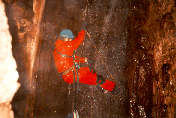
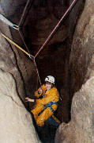
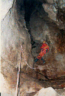

Pictures from around Yorkshire
By various LUSS members

Yordas Pot


Vespers Pot
Marble Steps Pot
By Mike Dollenger


Ascending Marble Steps
(1st pitch)


Descending Marble Steps
(1st pitch)
Ireby Fell Pot
By Sean Butler

Rigging a ladder

Above the Well Pitch!
Hagg Gill '97
By Geoff Beaumont

A nice gallery

The entrance pitch.
Spain '94
Taken during our 1994 expedition to the Eastern Picos in Northern Spain.
By Sean Butler

The Cheese Cave
(3rd Pitch)

The Cheese Cave
(4th & 5th Pitches)
Spain '95
A four page photo-diary of the expedition.By Geoff Beaumont

Pico del Macondiu:
behind our campsite

The Cheese Cave
(4th pitch)